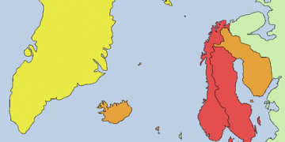

Los términos mitología nórdica, mitología germánica y mitología escandinava comprenden todo lo relativo a la religión, creencias y leyendas de los pueblos escandinavos germanos, incluidos aquellos que se asentaron en las antiguas Islandia, Britania, Galia e Hispania, donde se reunieron las fuentes escritas de la mitología nórdica. Es la versión mejor preservada de la antigua mitología germana, común a todos los pueblos germanos. La mitología germana, a su vez, ha evolucionado de una mitología indoeuropea más temprana.
La mitología nórdica era una colección de creencias e historias compartidas por los pueblos germanos septentrionales. Es importante señalar que esta mitología no era compartida por los pueblos nórdicos de etnia urálica (fineses, estonios y lapones) ni báltica (lituanos y letones), ya que estos poseían una propia, aunque parecida (en especial los bálticos ya que también son una rama de pueblos indoeuropeos). No era una religión revelada, pues no había una verdad entregada por los dioses a los mortales (a pesar de esto, la mitología nórdica cuenta con relatos sobre personas comunes que han aprendido las historias de los dioses a través de una visita de, o a, ellos). Además, no tenía un libro sagrado; esta mitología era transmitida oralmente en forma de una larga y regular poesía. Esta transmisión continuó durante la época vikinga, y nuestro conocimiento sobre ella está basado principalmente en las Eddas y otros textos medievales escritos durante o después de la cristianización. En el folclore escandinavo, estas creencias duraron mucho tiempo, y, en algunas áreas rurales algunas tradiciones han sido mantenidas hasta hoy. Otras han sido recientemente revividas o reinventadas como el neopaganismo germano. La mitología también ha permanecido como inspiración en la literatura así como en producciones escénicas o películas.
En la mitología nórdica el mundo está representado como un disco plano. El disco está situado en las ramas del árbol del mundo Yggdrasil, que sostenía los nueve mundos. En él habitaban varias criaturas entre las que destacamos a las siguientes: un dragón llamado Nidhogg que habitaba en las raíces. Este dragón roía las raíces para derribar a un águila sin nombre (consiguiéndolo en el Ragnarök) que habitaba en la rama más alta, y desde ahí vigila los nueve mundos. Esta a su vez tiene un halcón llamado Veðrfölnir en el entrecejo, que vigila los movimientos del águila. Además, hay una ardilla llamada Ratatösk que corretea de las raíces a la copa llevando noticias falsas del dragón al águila, y viceversa, sembrando así la discordia entre ellos. Asgard, la región alta del cielo, donde vivían los dioses, estaba localizada en el centro del disco, y solamente podría llegarse hasta allí caminando por el arco iris, guardado por Heimdall, quien estaba provisto de un gran cuerno con el que avisaba cada vez que un Æsir o un Vanir lo cruzaba. Los gigantes vivían en un lugar llamado Jötunheim.
Había una fría y oscura morada llamada Niflheim, y en la zona más profunda de esta se encontraba Helheim, lugar regido por Hela, hija de Loki. De acuerdo a la Edda prosaica, este era el lugar último de residencia de la mayoría de los muertos. Estaba situado en algún lugar al sur del ardiente reino de Muspelheim, hogar de los gigantes de fuego.
Entre otros reinos que componen esta cosmología podemos destacar Alfheim, hogar de los elfos de luz (ljósálfar) y Svartálfaheim, hogar de los elfos oscuros. En medio de Asgard y Niflheim se encontraba Midgard, la región baja del cielo, el mundo habitado por los humanos.